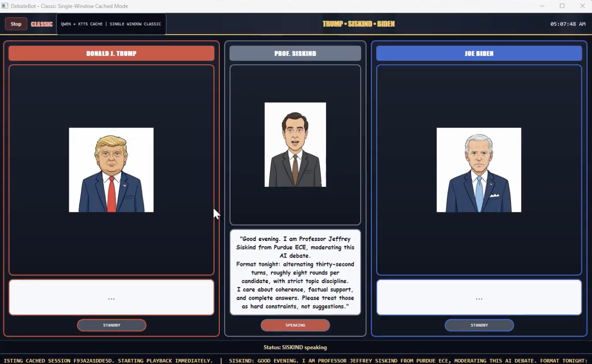

Things I've Built
A mix of AI experiments, applied tools, and side projects, from explainable safety AI and disease forecasting to BIM tooling, games, and geotechnical automation.

Multi-Agent Debate Intelligence Platform
An AI debate simulator built on a small language model, with voice cloning. The system uses Qwen 2.5 0.5B for controlled debate orchestration, supporting both policy-style and academic-style argumentation with character-specific voice delivery.
- Integrated Qwen 2.5 0.5B for multi-agent response generation
- Voice cloning workflows for realistic, character-specific delivery
- Structured agent roles for policy and academic debate formats
- Rhetorical quality evaluation under constrained compute
ConstructionSafety-FaithBench
A benchmark that audits whether construction-safety vision-language models use the visual evidence their verdicts depend on. Targeted versus size-matched random occlusion separates correctness, grounding, and faithfulness. Oral presentation at SNAS 2026.
Explainable AI for Construction Safety VLMs
Adapts a six-metric XAI evaluation framework, originally built for network-intrusion models, to construction-safety VLMs. A Florence-2 pilot on ConstructionSite 10k tests whether explanations stay accurate, focused, robust, and necessary.
IMDC 2026 Dengue Forecasting
Team-lead submission to the 3rd Infodengue–Mosqlimate Dengue Challenge, where our team placed in the top 3 in forecasting: weekly probabilistic dengue and chikungunya forecasts for Brazilian states using LightGBM with conformal quantiles, a GRU deep ensemble, a mechanistic model, and a Vincentized ensemble.
Bornil: Bangla Sign Language to Text
A gloss-free, keypoint-based pipeline that translates Bangla Sign Language video into Bangla text, with a frozen benchmark and baseline suite. The best model (temporal convolutions with joint CTC/attention) beats the vanilla baseline on every split.
IFC Toolkit
Two independent tools, Python (IfcOpenShell) and Windows .NET (xBIM), that compute world-space placement and coordinates in IFC building models. Continuous integration checks the two against each other.
GeoBIM Georeferencing Fault Benchmark
A controlled benchmark of 1,484 IFC georeferencing fault cases for Purdue GIS Day 2026, testing which coordinate errors actually change downstream decisions. Validated with 43 tests and byte-identical reruns.
Construction Site Photo Archive AI
Computer vision and language-model research on a real archive of daily site photos and QC reports from fire-station construction projects in Dhaka, covering ingestion, profiling, and an annotation pilot.
INDOT Solar Suitability Map
Public website for an INDOT solar suitability research project: a React, Vite, and Leaflet map for screening candidate sites and right-of-way parcels, with an insights page and a browser-based map builder for new shapefiles.
The Agreeable Advisor
A study of whether LLM advisors defer to a user's stated belief in expected-value decisions. Includes a stimulus bank, collection pipeline, and analysis.
BatteryScope
Native macOS battery dashboard in SwiftUI and IOKit. It compares raw, nominal, and macOS-reported health, keeps local history and lifetime statistics, and sends configurable alerts with no telemetry.
After Hours
Six online multiplayer party games plus Common Ground, a twelve-chapter game-theory course with live in-room experiments.
Ember Coast
An original island-economy strategy game for one human and three planning bots, with explainable bot decisions, bargaining, and an illustrated hex board.
MotionScore
Turns a song into a live physics-driven visualization: Demucs separates the stems, rhythm and pitch analysis drive the motion. Extended from an open-source line-rider visualizer.
Telegram Cloud Backup Tool
A PySide6 desktop app that backs up selected files to your own Telegram account, with watched folders, SHA-256 incremental sync, restore and search, and keychain credential storage.
Spotify Lifetime Stats
Privacy-first browser and Windows desktop dashboard for Spotify Extended Streaming History. Import ZIP or JSON exports, compute lifetime listening stats, explore top songs and podcasts, and export clean CSV summaries.
Chart Summarization Pipeline
End-to-end chart understanding workflow for staged vision-language inference, multilingual summary generation, progress tracking, and clean dataset outputs for research-scale chart analysis.
FaceXFormer Unified Transformer
Computer vision implementation around unified transformer-based face analysis, supporting research workflows for representation learning and facial understanding tasks.
BLIP-2 Reproduction
Notebook-driven reproduction work for BLIP-2 style vision-language modeling, focused on understanding multimodal model behavior and experimental setup.
PPE Compliance Detector
Applied computer vision project for detecting personal protective equipment compliance, connecting object detection workflows with workplace safety monitoring use cases.
Deepfake Detection
Machine learning project exploring visual authenticity detection and media forensics, with an emphasis on practical model workflows for deepfake identification.
Healthcare NLP
Natural language processing project for healthcare-oriented text analysis, structured around applied ML workflows for domain-specific language data.
Duckiebot Project
Robotics-oriented Python project for Duckiebot experimentation, connecting perception, control, and applied autonomy concepts in a compact platform.
Epidemiological Forecasting
Forecasting project for climate-linked disease signals, combining epidemiological time series, environmental variables, and applied predictive modeling.
RAG Finance Assistant
Retrieval-augmented generation system for financial document QA. Combines dense vector embeddings with LLM-based answer synthesis to enable natural language queries over complex financial reports and filings.
Learnable Image Alignment & Scale-Space Blob Detection
Computer vision implementation focused on robust feature extraction through scale-aware blob detection and learnable geometric alignment.
RuView
My fork of RuView, an open-source project that estimates human pose and presence from WiFi signals instead of video. I keep it to study camera-free sensing.
Social Media Scraping APIs
My fork of a curated list of social media scraping APIs and tools, kept as a reference for collecting data for NLP projects.
Atterberg Limit Chart Generator
Automated soil classification charting workflow for geotechnical analysis. Generates Casagrande plasticity charts and USCS classification reports from raw Atterberg limit data .
The Last Signal Game
A systems-oriented game prototype built in Pygame with OOP architecture, gameplay state management, and custom event handling. A fun experiment in building interactive systems from scratch - because engineers need hobbies too.